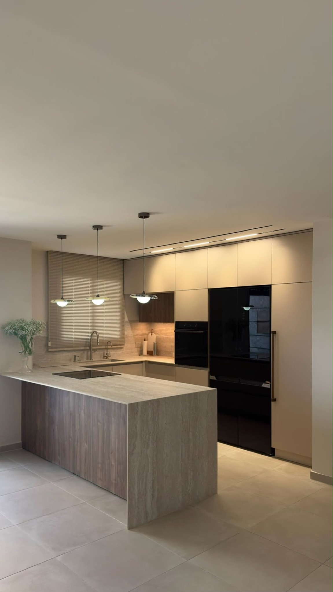

Sheet A-101
FIG. A — Walkthrough film · as built
Orian Kitchen
A U-shaped kitchen wrapped in warm plaster-toned cabinetry. A travertine island on a walnut base anchors the room, set against a full wall of black glass — the heavy machinery of the house disappearing into one dark, quiet plane.
MaterialsTravertine · walnut · smoked glass

FIG. B — Island & appliance wall · as built